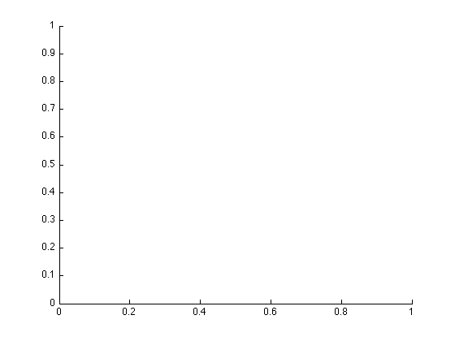
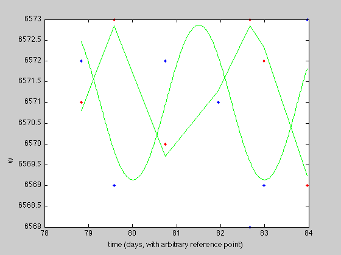

clear;
bin1lambda = [6571,6573,6570,6571,6573,6572,6569];
bin2lambda = [6572,6569,6572,6571,6568,6569,6573];
t = [78.831,79.581,80.742,81.943,82.670,82.982,83.960];
ydev1 = 0.5*(max(bin1lambda)+min(bin1lambda));
t0 = t - t(1);
lam1 = bin1lambda - ydev1;
lamfit1 = fit(t0', lam1', 'sin1');
a1 = 1.862;
b1 = 2.102;
c1 = -0.1043;
tforsin = linspace(t(1),t(7),300);
yfit1 = a1*sin(b1*tforsin+c1) + ydev1;
hold off;
figure(1);
plot(t,bin1lambda,'.r')
hold on
plot(t,bin2lambda,'.b')
ylabel('wavelength (angstroms)')
xlabel('time (days, with arbitrary reference point)')
plot(tforsin, yfit1, 'g');
 